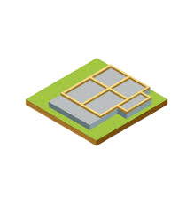

OSE Workbench Platform
Overview
- What?
- Why?
- How?
What is OSE Workbench Platform?

A CLI for common development tasks.
A catalog of patterns for how to develop a workbench using FreeCAD.
Dev versus “Regular” Dependencies
$ osewb
$ osewb test
$ osewb lint
$ osewb docs
$ osewb make
$ osewb -h
A Catalog of Patterns
Why?
Provide a common tool-set and vocabulary.
Avoid duplication of efforts.
Allow workbench developers to focus on the domain.
Make it easier to collaborate.
How?
CLI

Conclusion
- A common platform for OSE workbench development
- To make it easier to collaborate
- Using a CLI & Conda
What’s Next?
Getting Started & Installation
Thank you!